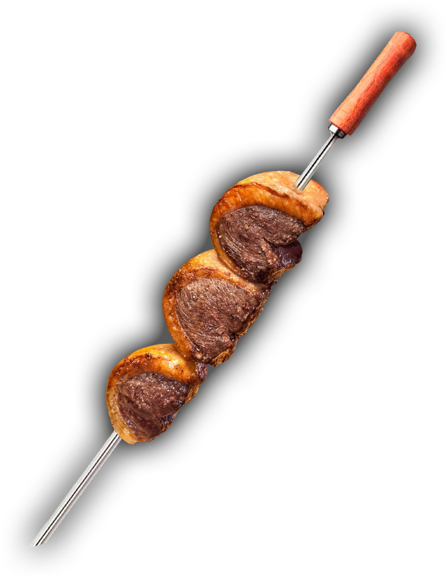

O que é isso? Não me refiro aqui à palavra "Churrasco", mas a algo menos chato (espero). Um material combustível entra em combustão, irradia calor dentro de uma bandeja, que pela sua forma o direciona para cima. Esse calor atinge uns tubos metálicos alinhados paralelamente e uns nacos de tecido muscular, que estão apoiados nos tubos, são aquecidos também, até estarem quentes o suficiente para mudar suas pigmentações e rigidez. É só isso? Será que um churrasco é algo tão acidental quanto um relâmpago atingindo tocos de madeira e queimando um corpo animal? Se você duvidou disso, acertou, pois a descrição e seu interesse por isso com certeza seriam tão acidentais quanto. Falta algo. Na verdade faltam mais de um algo. Faltam sal e sabor, com certeza. Sabor! Sim! o churrasco é mais que um acidente, é fruto de uma intenção, que é muito boa. Não é só uma intenção, é claro, mas todas elas apontam para esse sabor que faltava. Seja a intenção do sabor de reencontrar aquele amigo que te acompanhou nos dias triviais do cotidiano e conversar sobre mais trivialidades ou a do sabor de ter uma experiência fugindo desse cotidiano, estando sozinhos ou com amigos, família ou conhecidos, essas intenções, com uma boa pitada de sal grosso e (talvez) ervas realmente transformam o tecido muscular queimado em algo bem mais saboroso , especial e desejável: o churrasco!
Aproveite as recomendações do site! temos receitas, vídeos tutoriais e endereços de churrascarias no DF!